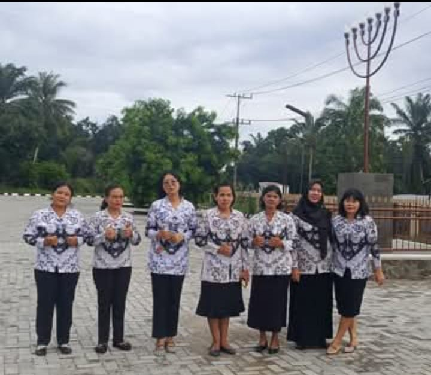
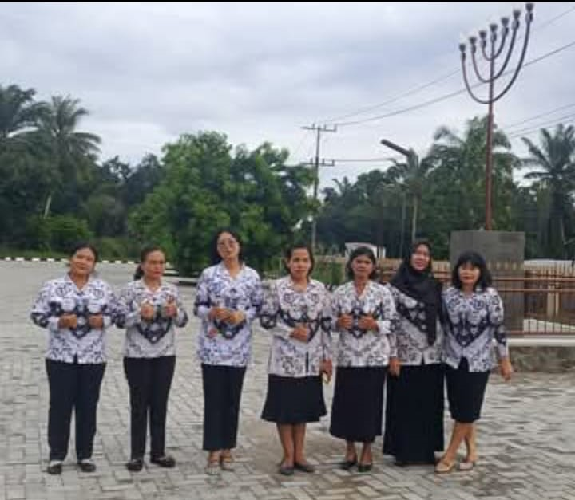

PEMBUKAAN KELAS INDUSTRI JURUSAN TKJ YAPIM PINANG AWAN
Aneka komentar di Twitter tidak pernah dimasukkan ke hati oleh siswa berprestasi ini...

Jl.Besar Pinang Awan, Kota Cikampak, Provinsi Sumatera Utara
Telp. (0751) 461692

 


Aneka komentar di Twitter tidak pernah dimasukkan ke hati oleh siswa berprestasi ini...
Kelangsungan karier siswa tidak lepas dari dukungan penuh orang tua di rumah...